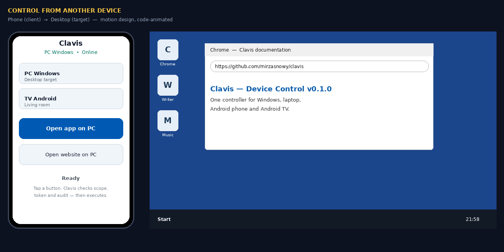
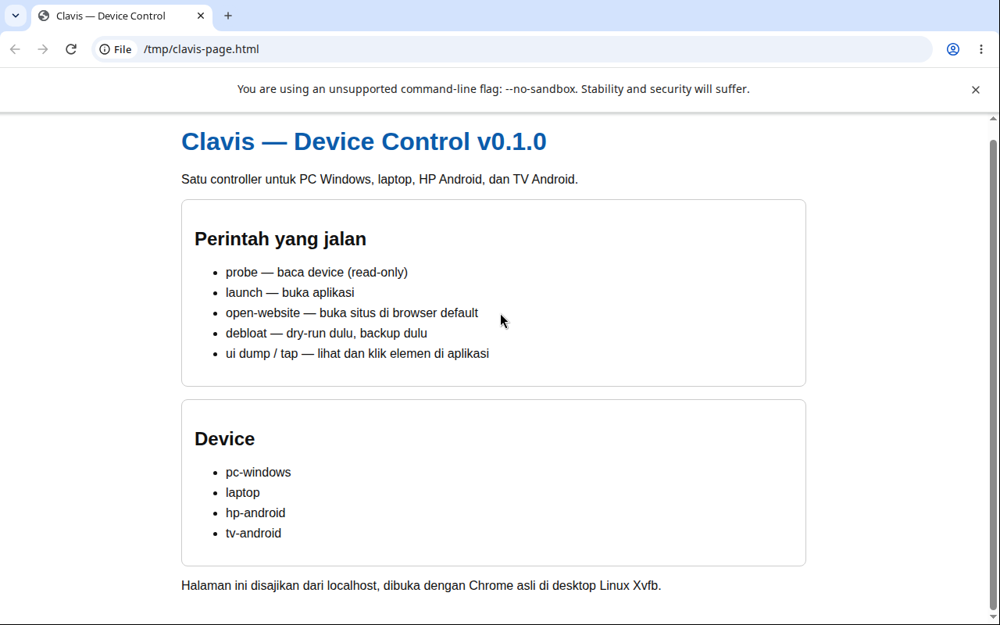

One key for every device you own.
Clavis controls a Windows PC, a laptop, an Android phone, and an Android TV from one place. Debloat the system you already have, open apps and websites on command, and click inside apps that are already open — with pairing, scope, and an audit trail for every change.
Honest status, version 0.1.0. Clavis passes 42/42 tests on a Linux host. It has not yet been tested on a real Windows host or Android device, and the phone gateway is designed, not built. This page shows what exists, what is a design concept, and what is still to do — without blurring the three.

How it works
Clavis does not replace your operating system, and it does not invent a new control protocol. It is a safety layer over the tools each system already provides: PowerShell on Windows, apt and systemd on Linux, ADB on Android.
- Pair. Compare a 6-digit code on the device and the controller. Until pairing succeeds, the device is not controllable.
- Probe and back up. Look at what is installed, save a backup manifest, and only then consider changes.
- Dry-run first. Every destructive action shows its plan before it runs. In MCP, destructive tools are dry-run only, by design.
- Confirm, then audit. Run it from the CLI with
--confirm, and check the hash-chained audit log afterwards.
One rule keeps the whole thing predictable: open, don't click. An app is opened only with a dedicated launch tool, a site only with a dedicated open-website tool. Clicks are reserved for elements inside an app that is already open.
| Device | Transport | What you can do |
|---|---|---|
| PC Windows | PowerShell | Apps, services, theme, debloat, UI Automation |
| Laptop (Windows / Linux) | PowerShell / SSH | Same, by detected OS |
| Android phone / TV | ADB | Apps, launcher, UI dump and tap, screenshot, app search by name |
iPhone is out of scope. It cannot be fully controlled from an agent, only through Shortcuts and vendor APIs.

Security, in plain terms
Full detail is in docs/security.md. The short version:
- Private mesh only. WireGuard, Tailscale, or Headscale. Agents listen only on the mesh IP.
- Identity. An Ed25519 keypair per device, identified by its SHA-256 fingerprint. Private keys stay on the device.
- Short-lived tokens. Scope, 60-second expiry, nonce, and command hash, signed with Ed25519. A screenshot token cannot debloat a device.
- Audit. Every change goes into a SHA-256 hash-chain you can verify.
- NEVER lists. Windows Store and .NET, Linux systemd and D-Bus, Android Settings and SystemUI are always blocked, even with
--confirm.
The key proves a command comes from you. It is not an OS bypass: it cannot unlock disk encryption, enrol a biometric, or pass a CAPTCHA.
Get started
cd device-control
export PYTHONPATH=src
python3 -m device_control.cli devices list
python3 -m device_control.cli probe --device laptop
python3 -m device_control.cli pair --device hp-android
python3 -m device_control.cli debloat --device tv-android \
--list examples/debloat/generic-safe.txt --dry-run
python3 -m device_control.cli mcp # MCP stdio server, 14 toolsSafe order on a real device: mesh, pair, probe, backup, dry-run, confirm, audit. See quickstart-device.md and OPERATIONS.md.
What is next
- Real-device testing: Windows Calculator UI test, Linux desktop UI test, Android pairing and launch.
- A Tailscale-only phone web gateway, reusing the same Clavis API.
- A Telegram companion for quick commands and approvals.
Nothing above is presented as done. When it is, this page will say so, with the test that proves it.